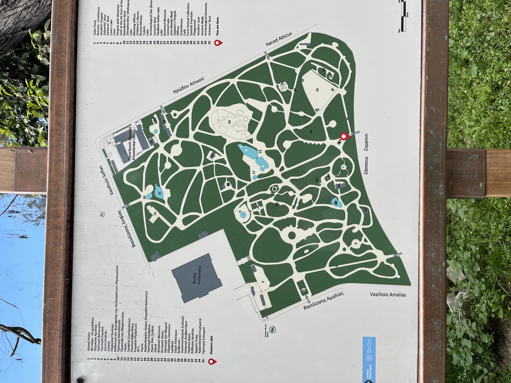
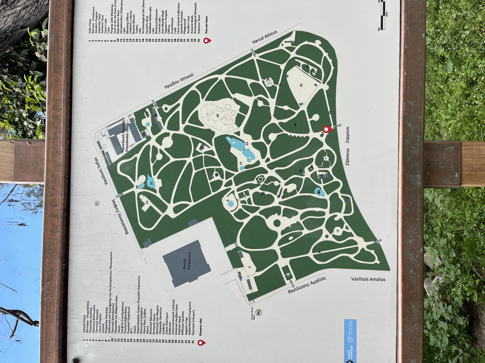

Introduction
Tucked in the heart of Athens, the National Garden is a lush, tranquil escape from the city's vibrant energy. Located just behind the Hellenic Parliament and stretching between Syntagma Square and the Zappeion Hall, this 15.5-hectare public park offers both locals and visitors a chance to slow down, breathe deeply, and wander through a living tapestry of both Mediterranean and exotic plants.

Originally commissioned in the 1830s by Queen Amalia — Greece's first queen — the garden was designed to serve as the royal palace's private grounds. Today, it retains much of its romantic, 19th-century charm.
With winding paths, shaded benches, ancient ruins, and a small menagerie, the garden provides more than just greenery; it tells a layered story of Greece's history. Whether you're after a peaceful moment or a deeper connection to Athenian culture, the National Garden offers a gentle, grounding experience right in the city's core.

History & Background
The National Garden of Athens, originally known as the Royal Garden, was commissioned by Queen Amalia in 1838 and completed in 1840 by German agronomist Friedrich Schmidt. Queen Amalia was deeply involved in the garden's development, personally overseeing its creation and spending several hours daily tending to it. She introduced the iconic palm trees, now towering at 25 meters, which continue to captivate visitors at the entrance on Vasilissis Amalias Avenue.
The garden spans 15.5 hectares and is located in the heart of Athens, adjacent to the Greek Parliament building and extending southward to the Zappeion Hall. It serves as a green oasis amidst the urban landscape, offering a serene retreat for both locals and tourists.
An intriguing historical event associated with the garden is the untimely death of King Alexander in 1920. While walking in the garden, he was bitten by a pet monkey, leading to his demise from sepsis three weeks later. This incident had significant political repercussions, influencing the course of Greek history during that period. These included the abdication of his father, King Constantine I, and the eventual establishment of the Second Hellenic Republic.
In 1923, the garden was officially renamed the National Garden of Athens and opened to the public. This symbolizes the transition from monarch to a more inclusive society. Today, the National Garden stands as a testament to Athens' rich history and biodiversity, featuring preserved ancient ruins and Roman mosaics, diverse plant species, and tranquil pathways that invite exploration and reflection.

Design Elements
Layout & Design
The National Garden is designed in a romantic, picturesque style and is typical of 19th-century European landscape architecture. The layout emphasizes naturalistic aesthetics — curved pathways, hidden corners, and carefully layered vegetation create a peaceful, immersive environment ideal for quiet exploration or relaxed wandering.

Pathways & Circulation
The park is crisscrossed by meandering gravel paths, some broad and busy, while others are narrower and more intimate. These pathways weave through dense plantings and open lawns, encouraging exploration and offering ever-changing perspectives of the garden. There is no rigid or formal geometry here — just gentle curves and frequent forks in the path that allow visitors to “choose their own adventure.”
Signage is minimal, which enhances the feeling of organic discovery. Several entrances — most notably on Vasilissis Amalias Avenue and near the Zappeion Hall — allow for easy access from various parts of the city center.
Plant Choices & Vegetation
The garden is home to over 500 species of plants, including both native Mediterranean plants and exotic imports. Notable species include:
- Tall Washingtonia palm trees (planted by Queen Amalia herself) which frame the main entrance.
- Jacarandas, oleanders, cypresses, and olive and orange trees.
- Dense hedges and climbing plants like ivy and bougainvillea.
- A small botanical section displays labeled plant specimens.

Water Features
There are several small ponds and fountains throughout the garden, which act as focal points and provide habitats for ducks and turtles. These water features are often surrounded by stone seating or shaded areas and add a soothing element to the environment.
In many of the ponds you can find koi fish as well. One particularly charming pond is located near the children's library and small zoo, where ducks often paddle across the surface or rest nearby.
Seating & Relaxation Areas
Throughout the garden, you’ll find a mix of:
- Simple wooden and stone benches.
- Pergolas and vine-covered arches.
- Open grassy lawns where visitors can sit or lie down (though not all areas are designated for lounging).
Many of these spots are oriented to overlook greenery, fountains, or ancient ruins, providing ideal resting points for reflection or conversation.
Other Features of Interest
- Ancient ruins and Roman mosaics are scattered throughout the garden.

- A children's playground, small zoo, and library offer family-friendly spaces.
Uses & User Engagement
The gardens provide a variety of uses for visitors, depending on their interests and preferences. Here are some ways to engage with the space:
- Leisurely Strolls & Exercise: The winding paths and shaded walkways are perfect for a relaxed walk or jog, allowing visitors to explore the garden at their own pace. Particularly creative visitors can even use thick plants and open spaces to enhance their workout.

- Botanical Exploration: Plant enthusiasts will appreciate the diverse collection of flora, from towering palms to fragrant citrus trees.
- Historical Discovery: Ancient ruins and Roman mosaics offer glimpses into Athens' past, adding a layer of cultural richness to the garden.
- Family Outings: The children's playground, small zoo, and library make the garden a family-friendly destination, with activities for all ages.
- Relaxation & Leisure: Seating areas, grassy lawns, and tranquil water features provide peaceful spots for relaxation.

- Wildlife Watching: Keep an eye out for the garden's resident tortoises, peacocks, and ducks, adding a whimsical touch to the natural setting.


 
